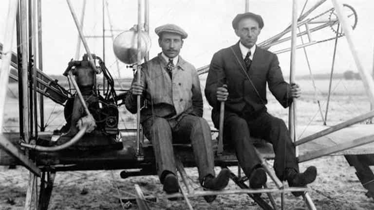

Peter Blackmire is a writer who has lived and travelled throughout America. He believes that America and the freedom it respresents is the greatest culmination of the Western tradition.


“Down with the Patriarchy!” shouts a blue-haired, non-binary, non-gender conforming thing at the top of its shrill lungs. Has the world gone mad? Has the apocalypse finally come? What is going on here? Is there a virus in the water? No, it’s just Tuesday at a University in America. And the blue-haired, shrieking thing happens to be your professor. Have fun at school fellas!
In traditional society, women’s role was to maintain the household, raise the children, and care for her husband. The men ventured outside of the household to hunt, make war, build and gather resources.
In primitive society, where the physicality of existence had not yet been supplanted by technology, there was no way around these rules. Women spent their days cooking, cleaning and caring, sometimes until their knuckles bled. Men tilled the fields or chopped down trees or stalked animals and opposing warriors from dusk till dawn. Sometimes they didn’t make it home.
Men could not (and still can not) give birth and breast feed. Women could not (generally speaking) throw spears as far and as fast as men. So there wasn’t much room for negotiating gender roles. The roles were appointed by nature.
By the way, while ‘women’s work’ is often denigrated today, especially by the blue-haired feminist things, it is no walk in the park. Anyone who has ever struggled to knead dough, wash clothes by hand, or impose a semblance of order on an unruly gathering of children, is aware that doing so is time-consuming and exhausting labor.
With the advent of technology (all of it invented, improved and maintained by the dreaded patriarchy), work has largely evolved into pushing paper, dialing the phone, reading, writing and communicating. Women recognized that with the physical barriers to ‘bread-winning’ having been largely cast aside, they could potentially do these sorts of jobs just as well as the men.
They lobbied their husbands and other powerful men to let them enter the workplace and compete for jobs alongside the men. And men, being reasonable, gracious and accommodating towards the ladies supported their ambitions.
Most reasonable, modern men support a woman’s right to venture outside of the household, earn a living, and gain her independence. (Some men in non-Western countries remain less supportive – i.e. still prone to the occasional public stoning.)
What we didn’t count on, however, was that women would bring their tone policing and behavior modification projects – hard wired into them over centuries of domesticating children – into the workplace and focus them on grown ass men. Nobody asked for that!
We also didn’t recognize how women compete for social dominance so differently from men. Probably because we were too busy earning a living and having fun by telling jokes amongst each other without being reported to HR.
Backstabbing, gossip, rumor mongering, slander… that’s how ladies compete with one another. Complimentary to the face and cunning behind the back. And now the men, rubbing their heads in agony, slowly coming to their senses, are realizing the drastic mistake they made in accommodating the demands of the perpetually unsatisfied feminist agenda.
College, once a haven for free thought, challenging ideas, and ritualistic debauchery, has devolved into a paranoid, politically correct surveillance zone where anyone who dares not conform to the feminist lunacy risks total ruin.
The workplace, once a place where men could work, speak frankly, curse, smoke and drink is now a drab detention center monitored 24/7 by commie, men-hating feminists in HR. Make an ‘off-color’ joke and you get to choose between putting your balls in a cinch while watching re-educational videos or being fired outright.
Bitch, please!
This is your boss
For those interested in the difference between men and women in social competition, I came across an interesting theory in the MGTOW discussion boards before the sensible folks at Reddit decided to ban the forum. We can’t have men speaking to one another without female supervision can we?
The theory was something along the lines of: men learned to be cohesive and loyal to one another in the early days since their gripes were with neighboring tribes. They had to stick together and overlook each other’s faults in order to unify into a cohesive fighting force. The outliers might be killed off in competition by the enemy tribes.
Women, however, determined their social hierarchy amongst themselves back at the homestead. So they developed the skills of infighting, cunning and sabotage since outright hostility within the tribe was not allowed. These are the skills they currently employ against men in all walks of life, walking away with ludicrous divorce and sexual harassment settlements without having done any of the ‘heavy lifting’. These are very advanced social skills that few men naturally possess.
They think we’re idiots for communicating in simple and direct and non-duplicitous terms. That’s why every television commercial portrays men as stumbling dullards who struggle to plug in a toaster. Because we struggle in a woman’s world.
And be honest, it’s no fun and nobody likes the world they’re making. That includes most women.

So here’s my solution. Men, first we should recognize that we are handicapped by a couple things. One is thirst. We can’t bring ourselves to tell the ugly truth to pretty woman (or even skanks) that we want to sleep with. In one way or another, to varying degrees, we want to sleep with nearly every female that crosses our path.
In a nicer light, many of us are prone to chivalrous behavior. Men are built to protect and cherish the weaker sex. So we support them in their ambitions to challenge and denigrate us. And we let them get away with it.
But it’s come time to tell the truth brothers. Here it is. Every technological advancement has come at the hands of men, and sorry my third world brothers from other mothers, but it has been mostly Western men.
I could detail all the inventors who brought us the various machines that have freed us from the daily physical toil that bound our ancestors to their natural gender roles. But instead let’s zoom out and focus on the big ones.
Electricity is a natural force at work in our bodies and nature. But it was European men (the patriarchy) who discovered and refined this force until it could be controlled and transported in batteries and wires. And it was men who built the transformers, transported them, dug the foundations and laid the electrical wires across the planet.
They used science (another evil invention by the patriarchy) logic and reason (things the blue-haired, woke celluloids severely lack) to bequeath all of humanity with this incredible gift.
The next time some fool complains about cultural appropriation tell her that in complete fairness, only white men are entitled to use electricity then. Keep your tamales and we’ll keep electricity. Seems fair.
Oh by the way, electricity covers nearly all modern technological inventions. So there’s no need to discuss computers, microwaves, or hairdryers since they all rely on electricity. But I’ll mention a few of them anyway.
A man probably invented the wheel, because he wanted to impress a women, or sleep with more of them across a wider territory, but who knows maybe it was a non-binary, blue-haired thing with a front hole in its groin region. But we do know that men invented planes, trains, and the automobile.
Here’s a quick review – Wilbur and Orville Wright invented the first successful airplane in North Carolina. Richard Trevithick – aka Dick Thick – invented the first steam locomotive. The question of who invented the first automobile revolves around who invented the engine. One thing is settled, the inventors were all European men. Nicholas Joseph Cugnot invented the first steam-powered car in the 1700’s for the all-male French military (who invented France).

The internal combustion engine gave us the modern automobile and modern transportation. George Brayton, an American male, was the inventor. Go U-S-A! (Side note: it was men who built all the highways and bridges that span America. Thanks guys!)
The previously unpublished version of the iconic photograph.
The evil white male Charles Babbage invented the modern computer in the 1800’s. The computer has been refined and improved by many hardworking men over several generations. In the 1970’s Ed Robert’s invented the concept of a personal computer. We’ve all heard of Bill Gates.
Everybody knows that Al Gore invented the internet. If I wanted to be even more of a dick I could list almost every modern technological invention or innovation and point out how it was created by man. Maybe I’ll do that in the future.
The Patriarchy gets a lot of pushback for the occasional subjugation and genocide but overall it has bestowed enormous gifts upon the world. Men don’t ask for a thank you, but the idea that they should bend over backwards in a perpetual apology stance is ludicrous.
Every person utilizes the inventions of men to improve their lives throughout their entire day. Wake up, turn on the lights (see electricity), use modern plumbing (thanks guys!) use transportation to get to work (thanks again 0atriarchs) and etc. etc. so on and so forth.
Personally I love women. Besides giving us life and sustaining us in our early years women contribute immensely to life and culture. They often make great professionals alongside men in the workplace. And women’s contributions to broader society are notable. Of course, we’d all be rough brutes and life wouldn’t be worth living without the refining presence of women.
But please recognize that men created the technological advances of the modern world. And the modern world, along with Western men’s generous largesse towards women enabled the rise of feminism. Here’s my advice to the unhinged, ultra-left feminists destroying today’s campuses and workplaces with their hostile antics.
If you really hate the patriarchy then stop your hypocritical and entitled use of men’s great improvements to our material existence. They are gifts bestowed upon us all by Western men through centuries of innovation. These incredible patriarchs labored, experimented, struggled, and created a better world for us. Most of them died anonymously.
They did it all so that one day you could take a selfie and post it to Instagram (invented by a man) inside an air-conditioned, well lit, dry and comfortable dwelling (built by a man).
If you really are so confused and ignorant as to go around proclaiming your incessant hatred of the patriarchy (men) then have a bit of integrity and go carpet munch each other into extinction. But be sure to do it in the cold and dark while being attacked by wild animals. Maybe then you’ll realize how much you benefit from the patriarchy every single day. And the world will slowly regain its sanity.
Read More: Why Patriarchy Is The Greatest Social System Ever Created